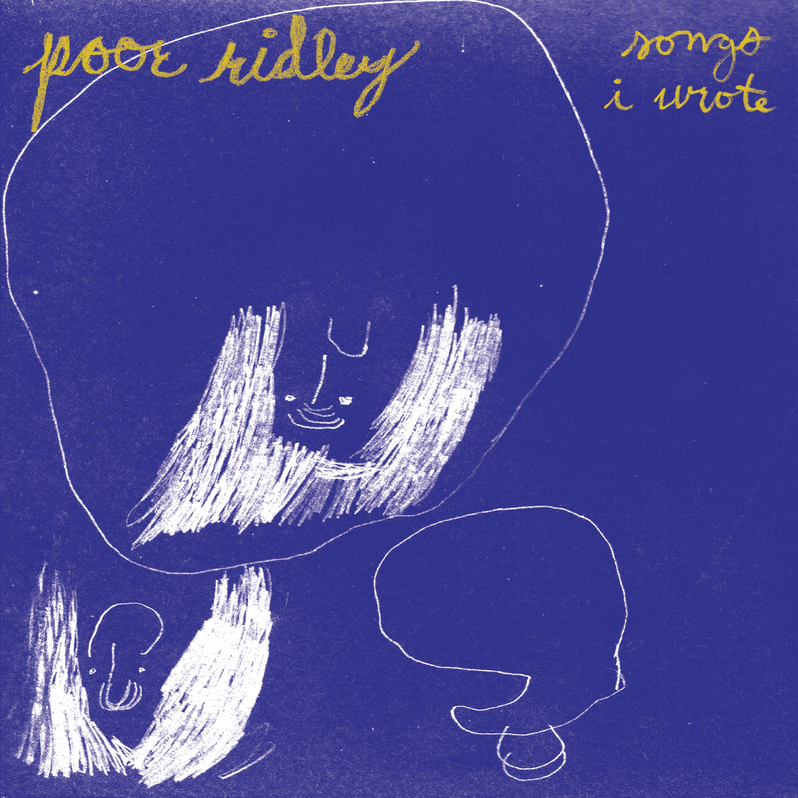

"[Poor Ridley] is reacting to a life where sports and strip malls are considered high culture... more than just a pop punk band with great hooks and snarky lyrics - which they’re excellent at."
– didntthathurt.com
"Poor Ridley is Milwaukee pop rock with teeth—catchy enough to sing in the shower, strange enough to follow you into your dreams. The songs glow like poison apples in your palm—sweet, venomous, unforgettable. Versatile, affecting and unafraid of a little chaos, Poor Ridley makes music for the restless, the lonesome and everyone who’s ever laughed while their heart was breaking.”
– Chelsea Tadeyeske, Pitymilk Press
LISTEN TO
Songs I Wrote
The first full-length by Poor Ridley
Released July 2024

"Blondes"
Premiered 3/25/2025
"End of Year Blues"
Premiered 8/23/2024
"Hello, Good Evening"
live in Madison - 2/1/2025
"The Longest Song Ever"
live in Madison - 2/1/2025